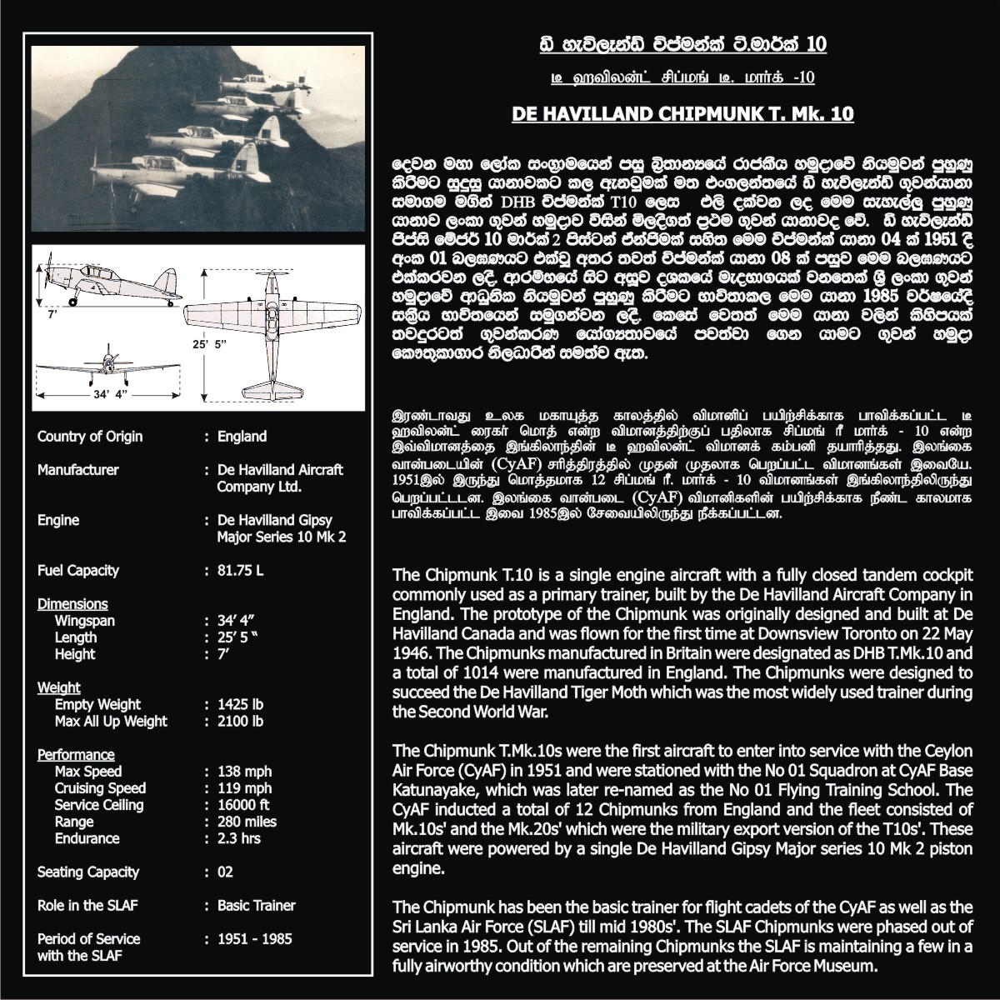

The De Havilland Chipmunk T. Mk.10 is a two-seat training aircraft designed in the United Kingdom. It was used for primary flight training and became one of the most successful trainer aircraft in aviation history.
| Manufacturer | De Havilland |
|---|---|
| Country | United Kingdom |
| Crew | 2 |
| Role | Trainer Aircraft |